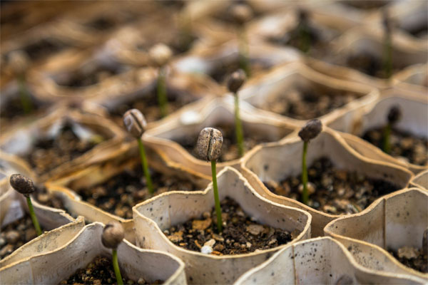
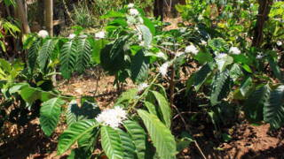
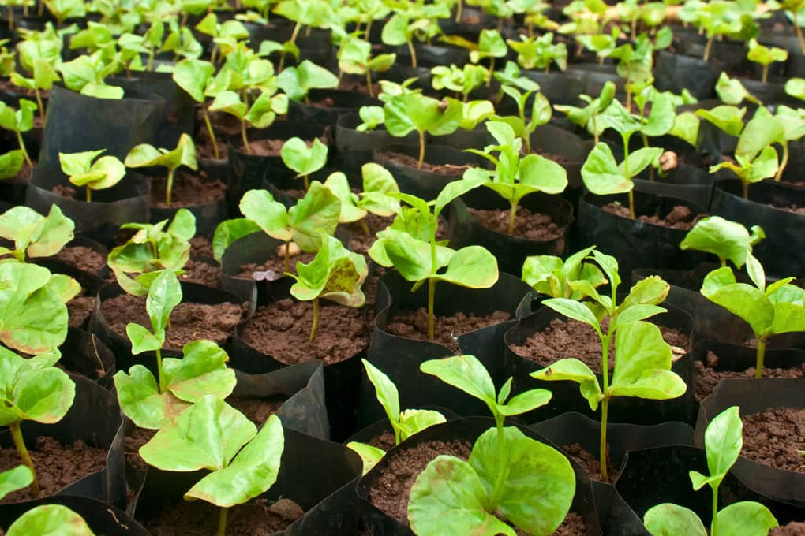

Le café, boisson incontournable dans le monde entier, provient des graines du caféier. Sa culture suit plusieurs étapes essentielles, de la plantation à la récolte.
|  | 1. La plantationLes caféiers sont cultivés à partir de graines, généralement en pépinière. Après 6 à 12 mois, les jeunes plants sont transférés dans les plantations. Ils nécessitent un climat tropical, avec des températures entre 18 et 25°C et une altitude adaptée (de 600 à 2000m). |
2. La croissance du caféierLe caféier met 3 à 4 ans avant de produire ses premières fleurs blanches parfumées, qui donneront les cerises de café. Il peut vivre plusieurs décennies, mais sa production optimale dure environ 20 ans. |
 |
|  | 3. La floraison et la formation des cerises de caféAprès la floraison, les fleurs tombent et laissent place aux fruits (cerises de café). Leur maturation dure entre 6 et 9 mois pour l’Arabica et jusqu’à 11 mois pour le Robusta. La couleur des cerises passe du vert au rouge vif ou jaune selon la variété. |